統一152px站立等效尺規。正常速度／3倍慢速並列；未進遊戲驗收。灰色人形是獨立量測替身。
第一段：前踏斜橫斬，接觸推人後回正。 8播放格／720ms
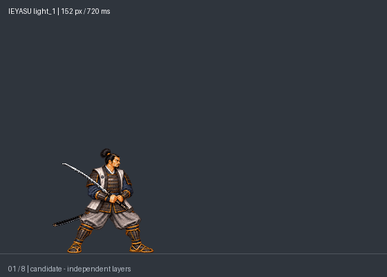
第二段：肩後蓄勢反掃，保留前踏位移。 8播放格／760ms
第三段：沉肩轉髖大掃，命中擊飛。 10播放格／1000ms
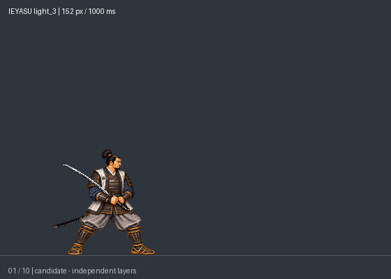
普通重手：收刀、分段拔刀後水平前突；刀鞘留腰側。 10播放格／1140ms
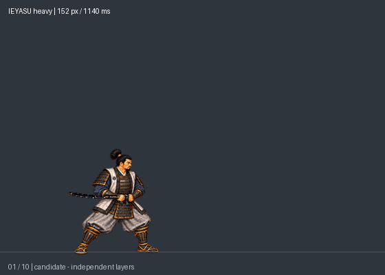
一閃蓄勢：右手握柄、左手鞘口，刀鞘朝後，慢收刀並屈膝壓低。 6播放格／900ms
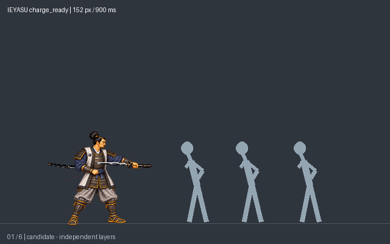
一閃保持：完全入鞘、低姿待發；示範保持400ms，遊戲由放鍵決定。 1播放格／400ms
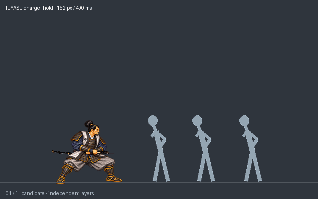
一閃施放：瞬間拔刀、三步前衝，關鍵踏步各100ms；末段水平前指停留；大型劍氣前向穿透、沿路敵人倒地，殘影／劍氣／量測敵人皆獨立層。 12播放格／800ms
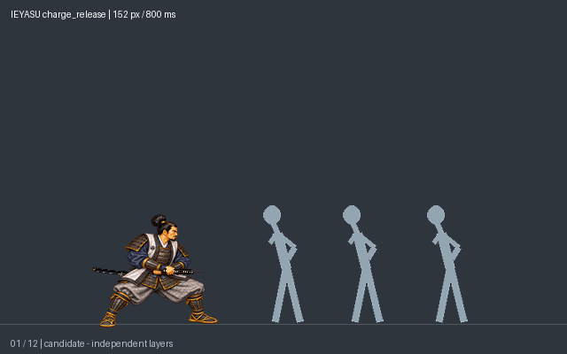
空中輕手：起跳後主武近距離揮斬，下降落地。 8播放格／660ms
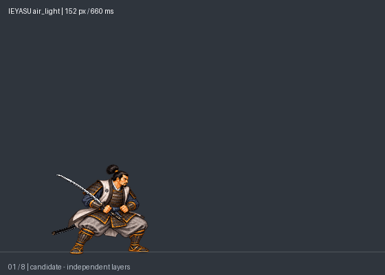
空中重手：跳起向前一步52px、深下斬後低馬步落地，回收不滑回原點。 12播放格／850ms
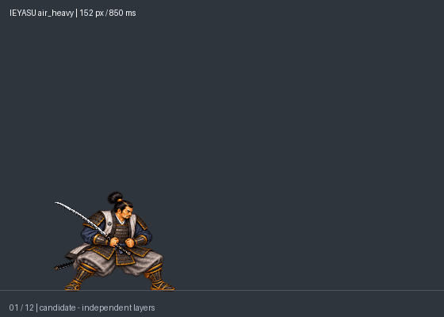
抓起：收刀安全收納、伸手閉握、拉近。 6播放格／600ms
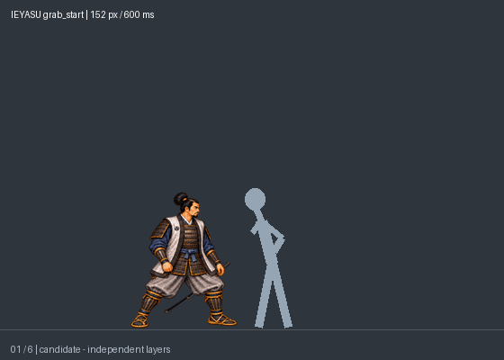
抓握保持：固定衣領／上臂接點。 6播放格／600ms
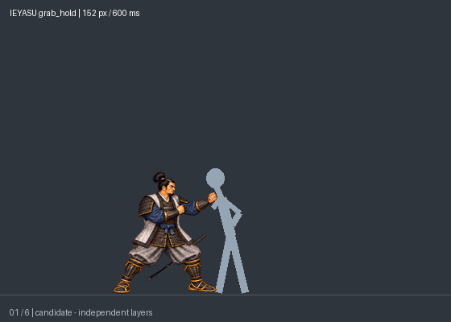
第一頭槌：採用已選第二下的同套姿勢與600ms節奏；獨立第一下輸入與命中。 6播放格／600ms
第二頭槌：與第一下共用已選姿勢，600ms；獨立第二下輸入與命中，不自動兩連擊。 6播放格／600ms
前摔：轉髖前拋，轉髖後鬆手，被投者獨立飛出。 13播放格／1000ms
反摔：轉背上肩、反向過肩釋放，最後左向站穩。 12播放格／1100ms
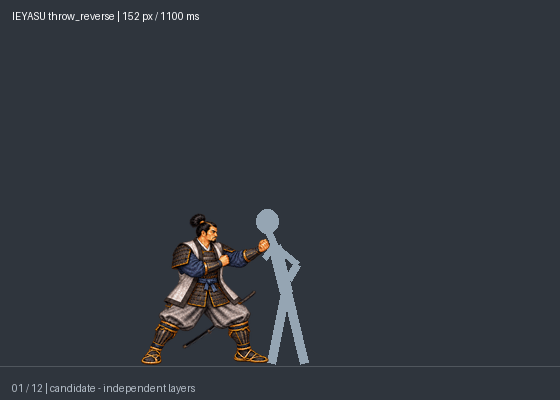
跑步重手：末步前掃、制動回站。 10播放格／800ms
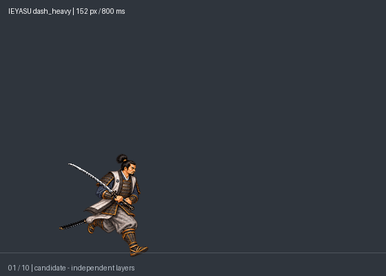